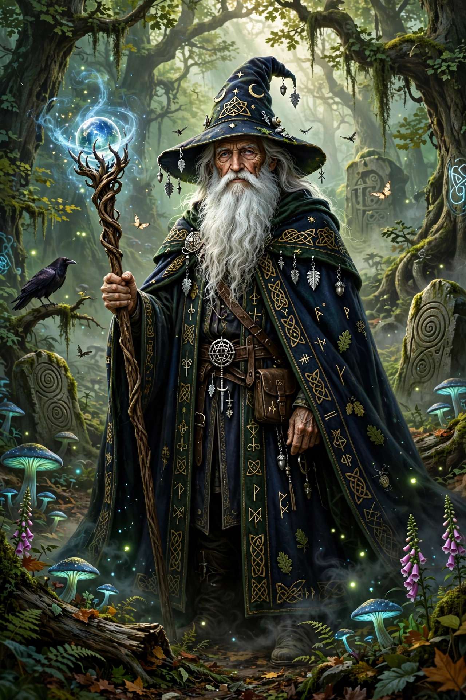

Merlin (Welsh: Myrddin) is a mythical figure prominently featured in the legend of King Arthur, best known as a magician, prophet and advisor to Arthur.

Geoffrey of Monmouth combined the Welsh prophet Myrddin Wyllt with Ambrosius Aurelianus to create Merlin Ambrosius in his Historia Regum Britanniae (c. 1136) and Vita Merlini. Geoffrey's Merlin builds Stonehenge and engineers Arthur's conception.
In Robert de Boron and the Vulgate Cycle, Merlin is born of a nun and an incubus, baptised, and uses his powers for good. He is eventually trapped by the Lady of the Lake / Nimue in a tree, cave or crystal.
Merlin appears in Tennyson, T.H. White's The Once and Future King, C.S. Lewis, Disney's The Sword in the Stone, and the BBC series Merlin.